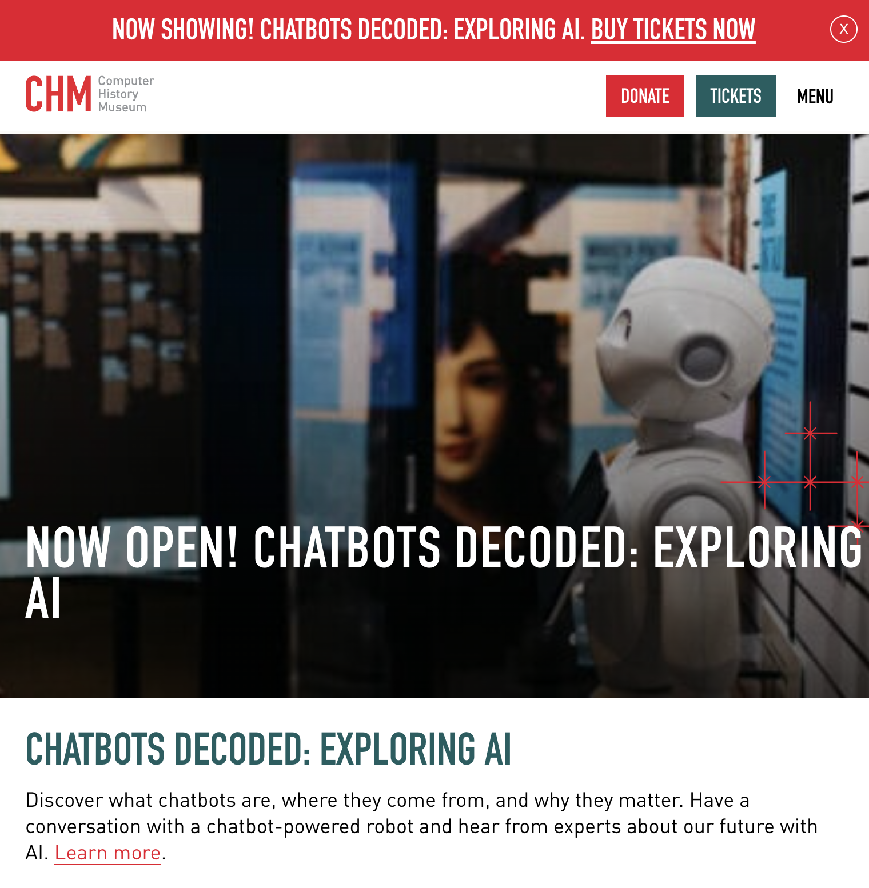

Wear & Tear Website
Preserving the Oldest Porn on the Internet for Future Generations
You can touch objects in museums.
Museum staff hate it, but it's usually possible.
The reason not to touch museum objects is because nobody wants to go to a museum to see dust that used to be museum objects. Also, if museum staff catch you, you are in trouble. So there are a few consequences.
Why porn? (see title ^)
On the internet, you can touch anything you want. You're anonymous. But there can still be consequences, if someone designs them.
A Worn Out Website
For my first project in cousin bootcamp, I spent two months wrestling with <canvas> to make a very short game of keepaway. For my second project, I think a website that visibly wears out as people use it would be really cool. Also totally useless from a product perspective, but I want something simple to learn fullstack development on and I like making cool things, not viable products that people want.
But what can I put on this website to get enough traffic to wear it out?

Generating the art
I want this page to be plausible historical fiction, and the page is all about this one image, so I needed excellent art. This rules out AI images, and here's why:
- Using an AI-flavored image would be a dead giveaway that it didn't come from 1992
- I enjoy prompt-wrestling LLMs, but prompt-wrestling image generators takes forever and I hate it
- Finding and running a rando uncensored model is unhygenic
- Artists would know I did, and I would be ashamed
- I want a sexy, tongue-in-cheek, campy, plausible image
- I could just draw it myself
It's been a long time since I shaded anything or actually tried to get anatomy right, but I'm willing to suffer for art. I did a very preliminary sketch...

And didn't have to go any further because my professional artist friend happened to ask for some custom javascript on her comic Squarespace and was willing to paint something funny, sexy, and believable in exchange.
So yeah, we can call that "generating the art", if we want to be gross about it.
Why ASCII
Disorganized Chronological Journal
Part I. Setup: 4/1/25
What I did tonight: I figured out what the project journal will look like. When I think about the early internet, I remember how loud things like modems and printers were. Modem songs have had a renaissance in the modern era, probably because they sound nice, but continuous feed dot matrix printers were 45x as loud and I think that deserves some acknowledgement.
I picked Comic Sans and Impact because they also feel real old.
Here's what inline code will look like.
print("hello world")
print("this is how code blocks will be styled")
print("it took multiple hours to make this in css")
print("and I have no plans to use this in the actual project...")
print("actually it could be cool as the donations leaderboard?")
Tomorrow maybe I'll work on making a monitor in CSS.
I also did a bunch of work on the narrative here on this page.
The Museum Part 4/3/25
Ok, so part of this project is the museum that contains the historical piece of porn. What should it look like?
Well, museums are always white, empty, clean looking. So a white background obviously. But what about typefaces and design?
I looked at a few of museums for reference. Museums don't really do drop shadows.
Moma PS1 is the most recent museum I went to. Their website is too hip for what I want.
The Computer History museum in Mountain View is a museum I've never been to, but I did drive past it a lot. This design is great for a museum that is in an office park but I want museum-museum aesthetic.
The MUseum for Digital Art was in Zürich and I liked going there when I was on work trips. I like how empty and clean the page is.

Museum für Gestaltung has more elements to borrow from. And I also liked going there on work trips to Zürich.
Analyzing Museum für Gestaltung design
Ok. I like that it's only one font, all I have to do is figure out how they're using it. So what is going on here?

Reference from the Museum für Gestaltung site. The font is Riforma Museum in 300 and 800 weight. But I want to use a Google font.

Poppins is pretty close, but the G and a are modern shapes instead of old timey.
Jost is also close, the a is the right level of modern, but the M looks drunk or woozy or something. Not respectable and museumlike.

This is a nice match. The G and a are classic, the M is upright and has a low middle, and although the umlauts are round instead of square, I can live with that because there are no umlauts in "Institute of Internet Pornography."
Testing out Wix Madefor Text on copy from the Museum für Gestaltung site:
Institute
of Internet Pornography
Accessible and inclusive
For students and trainees, the museum offers a versatile learning and experimentation platform on current design topics.
More styling 4/4/25
Ok so how to do the little chip buttons.
Then when you click it, the reference one goes grey in a nice way, but I made mine go blue-screen-of-death in a nice way instead.
I copied how the button works from the museum page with CSS transition. It's also a fake button, not an actual button, so it's just a styled div using pseudo-class and media triggers. I didn't know what pseudo-class and media triggers were before tonight! I used to just copy and paste them! :D
.button {
cursor: pointer;
border-radius: 999px;
border: 1px solid black;
width: fit-content;
padding: 9px 17px 12px 17px;
font-family: "Wix Madefor Text", sans-serif;
font-optical-sizing: auto;
font-weight: 100;
font-size: 14pt;
font-style: normal;
-webkit-user-select: none; /* Safari */
-ms-user-select: none; /* IE 10 and IE 11 */
user-select: none; /* Standard syntax */
}
.button:active {
transition: all 0.2s ease-out allow-discrete;
background-color: rgb(0, 0, 255);
color: #ebebff;
border-color: rgb(0, 0, 255);
}
@media (max-width: 768px) {
.button {
transition: all 0.2s ease-out allow-discrete;
font-size: 12pt;
padding: 9px 15px 11px 15px;
}
}
@media (min-width: 769px) {
.button {
transition: all 0.2s ease-out allow-discrete;
font-size: 14pt;
padding: 9px 17px 12px 17px;
}
}
a {
text-decoration: none;
}
a:link{
color: black;
}
a:visited{
color:black;
}
.button a:active {
color: white;
transition: all 0.2s ease-out allow-discrete;
}
I also did a cute little thing for links that are in paragraphs, it turns a color when you hover on it: Google
I also found out how to justify text and hyphenate in CSS! Because the museum had multiple words hyphenated which is a weird choice to hardcode, so I thought it had to be a CSS thing. Hyphenating words on the web also feels like a funny choice to me, but justified text looks better and it does make a webpage feel more like high-quality printed material. Apparently you can even put invisible hyphens in your words so the CSS doesn't break them up in weird places!?
body {
font-family: "Comic Sans MS", "Comic Sans", cursive;
font-size: 11pt;
text-align: justify;
hyphens: auto;
}
4/22/25 - back to it
Ok it's been a minute since I worked on this. The triumph of getting a database on Neon and the page on Fly.io was so incredible that I just coasted on that for two weeks. I still don't super understand databases but I do understand now the relationship of where the backend lives, where the database lives, and how the backend uses an ORM to talk to the database. I think that because I only ever hacked together databases locally, I was struggling to understand how they could exist alongside the backend, or didn't understand that they could exist elsewhere? Like many things with coding, it's kind of hard to grasp what it was exactly that made the concept incomprehensible two weeks ago.
I took today off work to focus on getting some momentum on the project again. I'm going to start with getting this goofy little thing where ascii naughty bits float around when you click on the title of the gallery page.
Before starting on it, here is how I think I'll approach it:
- Use codepen so the code isn't tangled with anything else
- Focus on getting the movement right first
- Use CSS absolute position instead of canvas elements
- The goal behavior is for an ascii bit to appear, float around, and fade away.
Except yay it seems like codepen is down or my internet is down. So doing it locally instead.
- Realizing that I need to make a frame counter for when to move the css elements.
- As I'm working on it, ChatGPT is annoyingly giving me event properties that are not accurate (like event.clickX and event.clickY) but I switched to clientX clientY by looking at console.log(event)
- Well, that took a long time. I ran into problems where I was asking ChatGPT for "floaty animation" and it was giving me weird equations that looked terrible. Eventually I dug around on my own and figured out that what I wanted was each object to follow its own sine wave.
I'm still not totally happy with the motion but this isn't even a critical piece of the project anyway. Time well spent? >:( ALSO UGH IT WON'T WORK HERE ON THE JOURNAL PAGE probably because of position: absolute... so frustrating. I'll have to go back and clean it up sometime later because I AM FRUSTRATED NOW
OK I figured it out. Here was the problem:
window.onload = function() {
mainTitle = document.getElementById("logo-title");
console.log(mainTitle);
if (mainTitle) {
floaties = new Floaties(mainTitle);
mainTitle.onclick = function(event) {
const x = event.clientX;
const y = event.clientY;
floaties.makeFloatie(x, y);
}
}
}
Yeah so clientX/clientY attributes of event was the problem. Once I switched those out for pageX/pageY, it worked.
4/26/25 - Making the website, Craigslist Edition
When I talked with Tom this week, he said I should start from scratch and make a Craigslist edition of the website, for practice. Like start from scratch and make a bun project, make a database, deploy it.
So here's what I'm doing. Starting at abuot 3pm:
- Made a new directory in my local code folder.
git init'd it. - I like command line interfaces more than GUIs because with a cli, you can only see the complexity that you currently understand. Like if I'm in the cli, I don't know there's a verbose mode until I need it or copy/paste it from somewhere else. In a GUI, all your options are visible and I have a hard time figuring out what's the most important thing to pay attention to.
- Anyway. Ok next step is starting my bun project. I'm going to try to do this without checking my notes from Tom before figuring out the next step.
- Ok so I'm going through
bun addone by one and looking up each package on npm. After looking at thebun adddocumentation that seems to say it's the same thing as npm. - Now I have added Drizzle ORM, EJS, dotenv, and PostgreSQL to my project. One at a time. While understanding what I'm doing though! :D
- I retyped everything over from Tom's bun server example's
src/server.tsand I understand how it's working better. Also, I was reading up on async stuff in javascript the past couple of days, which helped understanding the async await stuff. I used Neovim to retype everything and I have autocomplete turned off, which was a lot of typing. My hand hurts now.
It's about 4:30 pm. So I worked for about an hour and a half? I'm going to delete everything and start again from scratch maybe tomorrow morning?
For now, I'm switching over to plan out on paper what the craigslist edition needs to have.
5/14/25 - Making javascript basics for Craigslist edition
Today I'm going to spend a couple of hours on making the minimal javascript that I'll need in order to make the craigslist version of the site work. That is:
- Popup dialog function (show dialog, communicate that it's been shown to state)
- State object (for which dialog to show)
- Text selection event (for ascii text)
- Position the porn image to a good spot in the iframe (use
window.scrollTo?) - How does iframe talk to parent page?
window.parent.postMessage()probably works - Make the computer turn off (triggered by state)
So here is the popup:
I have a problem. MDN documentation on <dialog> says never ever ever make a modal dialog not closeable by ESC key. But I want to. But also, that's not very important. Anyway, here's the popup code on the HTML side:
<button id="popup">Popup</button></p>
<dialog id="dialog-popup">
<p>Do not touch the artwork!</p>
<button id="dialog-button">OK</button>
</dialog>
and on the JavaScript side:
const dialogPopup = document.getElementById("dialog-popup");
const dialogButton = document.getElementById("dialog-button");
dialogButton.addEventListener("click", function(event) {
dialogPopup.close();
});
const popupButton = document.getElementById("popup");
popupButton.addEventListener("click", function(event) {
dialogPopup.showModal();
});
On the actual project I'll probably create the popup in javascript instead of having it embedded in the page from the start. I'll probably just use one and repopulate it with different text and buttons based on what state the page is in (how irritated the curator is with you).
Here's a button that progresses through a few different messages from the curator:
Curator state: not annoyed
Here's the javascript mapped to the <button> and text element above:
// stateful curator
let curatorState = {
annoyance: 0,
dialog: {
0: "Please refrain from clicking the button; the wear and tear piles up quickly.",
1: "It is a fascinating button, but please do not touch the works in this exhibit.",
2: "Look with your eyes not your cursor THANK YOU :)",
3: "Stop clicking the button.",
4: "You don't care about ruining this historical button. You hardly deserve the privilege of seeing it.",
5: "This is your last chance to stop clicking the button. Look at the rest of the page or else.",
6: "Your button-clicking privileges have been revoked. The button is now closed for clicking."
},
state_display: {
0: "not annoyed",
1: "miffed",
2: "irritated",
3: "seriously offended",
4: "so over it",
5: "kicking you out",
6: "you have been kicked out, you have lost the privilege of clicking the historical button"
}
}
const curatorStateDisplay = document.getElementById("state-display");
const stateDialog = document.createElement('dialog');
document.body.appendChild(stateDialog);
const stateDialogButton = document.createElement('button');
stateDialogButton.innerHTML = "OK";
stateDialogButton.addEventListener("click", function(event) {
stateDialog.close();
})
const annoyCurator = document.getElementById("state");
annoyCurator.addEventListener("click", function(event) {
if (curatorState.annoyance === Object.keys(curatorState.dialog).length) {
return;
}
stateDialog.innerHTML = `<p>${curatorState.dialog[curatorState.annoyance]}</p>`;
stateDialog.appendChild(stateDialogButton);
stateDialog.showModal();
curatorStateDisplay.innerHTML = `Curator state: ${curatorState.state_display[curatorState.annoyance]}`;
curatorState.annoyance += 1;
});
In the actual project I'll have the dialog messages pulled in from a database and track more states than just the curator's annoyance.
Okay, now for the text selection event. Highlight some of the text in the smiley face below:
No text highlighted
, ; , .-'"""'-. , ; ,
\\|/ .' '. \|//
\-;-/ () () \-;-/
// ; ; \\
//__; :. .; ;__\\
`-----\'.'-.....-'.'/-----'
'.'.-.-,_.'.'
'( (..-'
'-'
Ok I was annoyed because the tag that mirrors the highlighted code isn't respecting space characters, but then I realized oops <code> tags don't do that, only <pre>s do. So here's a pre that does:
no text highlighted
Here's the code for that.
// highlight selection code
const selectDisplay = document.getElementById("select-display");
const displaySelect = document.getElementById("display-select");
const selectTarget = document.getElementById("select-target");
selectTarget.addEventListener('mouseup', () => {
const highlightedText = window.getSelection();
if (highlightedText) {
selectDisplay.innerHTML = highlightedText;
displaySelect.innerHTML = highlightedText;
}
})
There's a problem I'll need to solve in the actual project of grabbing what the actual index range selected is -- since in the ascii porn image there might be lots of different places where @@@@ would occur, so which set of 4 @'s in the huge ASCII image need to be degraded?
Oh hey the window.getSelection() object already has that stuff! Yay :D
OK what else am I working on... going down the list, the next thing is positioning the porn image in the proper place inside the iframe. I don't know whether scrollTo() should be on the <iframe> in the parent page or in the inner page on itself...:
Yeah ok, I tried both. It needs to be a script on the inner page itself.
On the first iframe there's no scrollTo(), but the second iframe's page has a script that says window.scrollTo(600, 500). In the real project page, the iframe will show more of the ASCII. It's hard to even know you're looking at a boob right now, even though it's precisely positioned to show you one.
I kind of already made the "turn off" state work with the annoyance button, so the only thing left on the list to do is to make the page inside the iframe talk to this main page. MDN documentation for postMessage says it lets a page communicate with the iframe embedded in it or lets a page communicate with a pop-up it spawned.
COOL...
Nothing selected yet
YAY I DID IT.